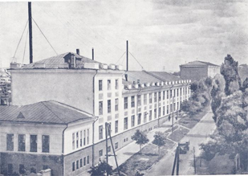

О компании Букурия

Кишиневская кондитерская фабрика АО «Букурия» – одно из наиболее активно развивающихся предприятий пищевой промышленности республики. Это крупнейшее и единственное в Республике Молдова специализированное предприятие по выпуску всех видов сахаристых кондитерских изделий, шоколада и шоколадных изделий. Помимо этого, здесь вырабатывают мучные кондитерские изделия – вафли и печенье.